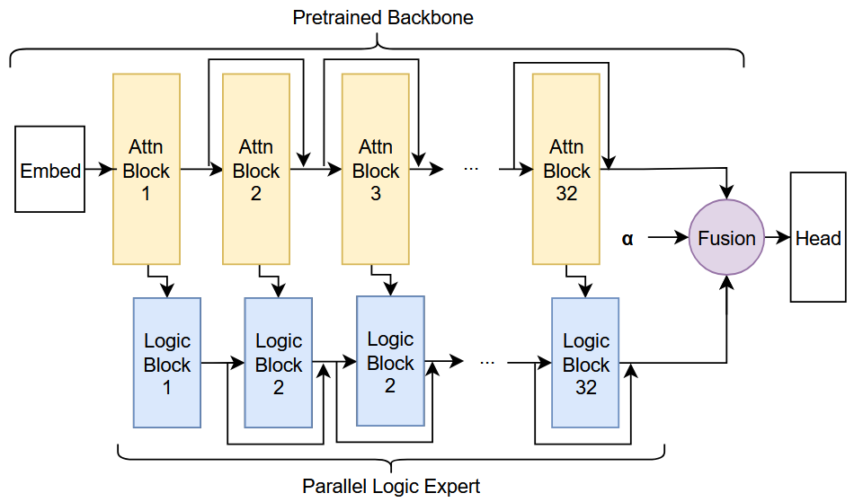
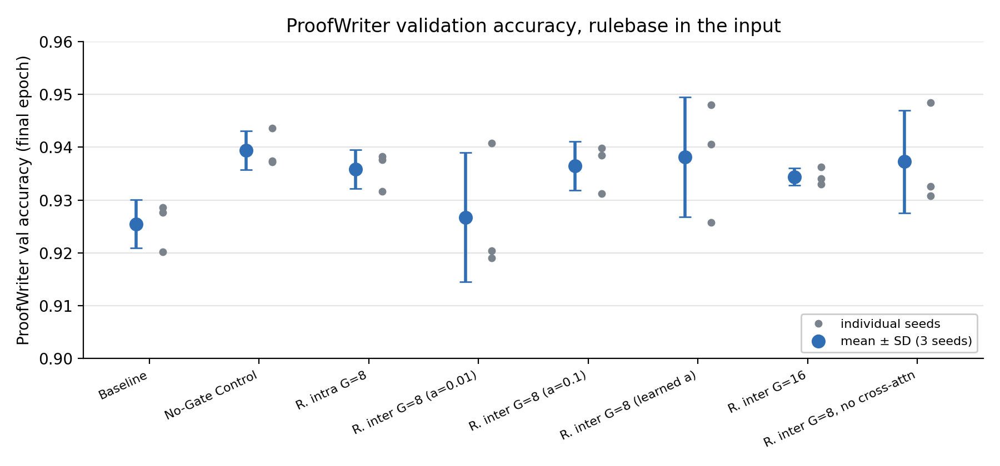
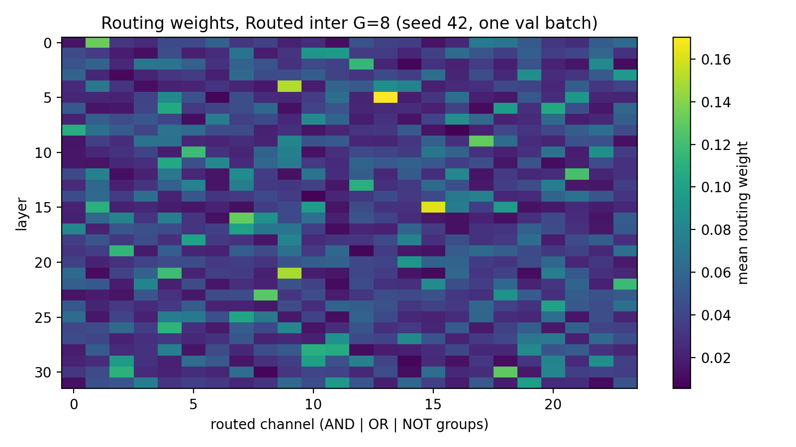

Parallel Logic Expert with Operator Routing
Abstract
We introduce a logic-augmented transformer pathway that routes token-level representations into fixed fuzzy logical operators (AND/OR/NOT) or straight-through-estimation, so the network learns compositional structure rather than an ensemble of expert networks with shared architecture design. At each backbone layer, the hidden states are projected to a lower dimensional K, Q, which the running logic state queries (cross-attention). The attention matrix is routed, and local windows over either token or gate-channel axes are composed. The final logic state is fused with the backbone features before classification. The proposed architecture augmentation imposes structured, interpretable compositions over token features. A key design dimension is the axis of composition: intra-token compositions (feature axis) compares features within a token, while inter-token compositions (sequence axis) compares features across neighboring tokens. We evaluate these design choices with Llama-3.1-8B under matched parameter budgets over three seeds. On ProofWriter with the rulebase in the input, adding a parallel branch with a fusion head to the backbone gives a consistent gain: a No-Gate Control (an MLP branch with the same fusion head, no logic operators or cross-attention) beats a linear-head Baseline by $+1.4$ pp in every seed (SE 0.2 pp). The logic operators add nothing on top of that: no routed variant beats the No-Gate Control (inter-token $G=8$: $-1.3$ pp, intra-token: $-0.4$ pp, and $-0.2$ pp for routed without cross-attention, which matches the control's used parameters within 0.05%), and removing cross-attention changes nothing measurable. Routing entropy stays at 97–98% of its maximum and a learned fusion weight shrinks, so the model largely routes uniformly and down-weights the branch. On MNLI, routed and No-Gate variants are also indistinguishable. The gain comes from the fusion-head path, not from operator routing, at this scale.
1. Introduction
Transformers provide strong performance on a wide variety of tasks [1]. Both chain-of-thought (CoT) prompting and reasoning models can greatly improve performance on reasoning tasks [2, 3]. However, many CoT approaches use N-shot prompting. Additionally, both CoT and reasoning models utilize reasoning by iterative and extended inference, which requires far more tokens. This increases inference costs for many tasks [2].
Our approach instead introduces a novel architecture for structured computation within the latent space, with no additional tokens needed. We will test how this constrained, logic-inspired pathway affects performance on reasoning problems and generalization.
Mixture-of-Experts (MoE) models [4, 5, 6] introduce conditional computation by routing tokens to specialized subnetworks, or weighting the results of several/all experts. Our method introduces conditional computation by routing and weighting tokens to logical operators. In this formulation, the operator routing is learned rather than expert weights. When tied with attention, this method may allow robust routing in the logic space. This space has forced sparsity due to softmax and local compositions (local intra-token or inter-token windows), which may allow the emergence of specialized operator-feature connections.
Our activation metrics allow learned logic compositions to be interpreted. Routing entropy and fusion $\alpha$ parameters allow us to measure the utilization of the logic expert. Experiments on logical reasoning benchmarks compare the Baseline, the No-Gate Control network (a parallel MLP branch with matched parameter count for fair comparison), and the logic expert variants.
A core design question is how the local operator windows should be applied in the gate compositions. Our first implementation applies capacity on the channel axis (neighboring channels on one token). The next design applies capacity on the token axis: each channel compares the same indexed feature on neighboring tokens (channels remain independent). This axis change could affect which feature relationships are learnable, and we test whether it affects performance. Figure 1 provides a high-level view of the architecture.
This paper makes three contributions. (1) Inter-token compositional routing with operator reductions and residual logic-state updates. (2) Controlled, seed-paired ablations over gate count, window axis, fusion $\alpha$, and cross-attention against a parameter-matched control. (3) An attribution result: on ProofWriter the parallel branch with its fusion head beats a linear-head Baseline by $+1.4$ pp in every seed, but on ProofWriter and MNLI operator routing does not improve over the parameter-matched control, and mechanism metrics (near-maximal routing entropy, a shrinking learned $\alpha$) indicate the branch is barely specialized.

3. Methods
3.1. Architecture and State Representation
The logic-augmented architecture introduces the logic-expert pathway parallel to the transformer backbone. At each layer $t$, the backbone produces hidden states:
In parallel, the logic expert maintains logic states which are updated at every layer:
At each layer, the logic state attends to the backbone via multi-head cross-attention, producing attended logic features:
After the final layer, the logic state is fused with the backbone:
where $\alpha$ controls the contribution of the logic pathway.
Notation. $\pi_t$: routing weights, $s_t$: gate activations, $u_t$: routed gate activations, $B$: batch size, $S$: sequence length, $H$: backbone hidden dimension, $L$: logic-state dimension, $G$: gates per operator family (AND/OR/NOT), with total routed channels $3G$, $C_t$: local window size at layer $t$, $\tau$: routing softmax temperature.
3.2. Cross-Attention into Logic Space
At each layer, logic tokens act as queries, while backbone hidden states are projected to keys and values. This produces attended logic features:
These features serve as the input to the routing and composition stage.
3.3. Routing and Gate Computation
Routing and gate activation use separate learned projection matrices: $W_r$ produces routing logits, while $W_g$ produces gate activations.
Routings are computed from $\tilde{L}_t$:
Routing weights are:
Gate activations are computed as:
The routed soft activations are:
In soft mode, $u_t := u_t^{\mathrm{soft}}$. In STE mode (forward binarized), we use:
We split:
3.4. Windowed Operator Composition
Let $v \in [0,1]^{B \times S \times G}$ denote one operator group. Windows are causal and defined along either the inter-token axis (sequence), or intra-token axis (channels).
For inter-token composition:
Operators are:
Applying to routed groups:
AND and OR reduce to $[B,S,G]$. NOT is applied elementwise and flattened to $[B,S,G \cdot C_t]$, to preserve negation operation structure. The concatenated representation has dimension:
3.5. Layer Update and Residual Flow
The concatenated operator outputs are projected:
The logic state is updated via:
3.6. Output Fusion
After the final layer, fusion is applied as in Eq. (4). $\alpha$ may be fixed or learned, and it directly controls the contribution of the logic expert.
4. Experiments
4.1. Setup
We use Llama-3.1-8B [13] as the shared backbone for all variants. We compare: (i) a Baseline model, (ii) a No-Gate Control (parameter-matched), and (iii+) the logic expert variants. The No-Gate Control serves as a parameter-matched control to separate routing effects from pure parameter-count gains. All variants use the 3 label classifier head. The original Llama head is not used. In this control, the parallel branch excludes cross-attention, operator routing, and compositional gating. Its MLP width is set to match the parameter count of the routed layers. The cross-attention modules are still constructed in the control but never called, so its trainable-parameter count includes 71M unused weights. The parameters it actually uses match the routed model without cross-attention (Table 2). All experiments use the AdamW [14] optimizer and cross-entropy loss, with full fine-tuning of the backbone in bfloat16. Every configuration is run with three seeds (42, 777, 123). The seed selects the training and validation subsets as well as the initialization, so comparisons between models are seed-paired. We call a difference supported only if its seed-paired mean is positive and exceeds two standard errors. The main hypothesis (routed inter-token $G=8$ beats the No-Gate Control on ProofWriter) and this test were fixed before the runs. Each run used one NVIDIA H100 80GB or H200 141GB GPU on the Oregon State University HPC cluster. Code, per-run logs and the scripts that generate every table and figure are in the public repository.
4.2. Logical Reasoning -- ProofWriter
We use the ProofWriter [15] dataset to
compare logical reasoning to the baselines. ProofWriter is a logical reasoning dataset where
each sample contains a small rulebase (facts plus rules) and a query to evaluate as true, false,
or unknown. It is useful here because it directly tests multi-step compositional inference,
which matches the intended behavior of the routed logic pathway. Each input is the rulebase
followed by the question ("{theory}\nQuestion: {question}", about 120 tokens on
average), truncated from the left if needed so the question is always kept. We use
deterministic, matched sampling across all models (10k train, 5k validation, all problem
depths). Main runs are trained for 3 epochs. Validation accuracy still rose from epoch 2 to 3
in 17 of 24 runs and fell by less than 1 pp in the rest, so longer training might raise scores
slightly.
4.3. Beyond Logic -- Multi-Genre Natural Language (MNLI)
To test performance beyond rulebase logic tasks, we evaluate performance on Multi-Genre Natural Language (MNLI) [16]. MNLI allows us to evaluate the natural language understanding of the model. MNLI has logical multi-class labels (Entailment, Neutral, Contradiction), this allows us to map to the same 3-label classification head used for ProofWriter.
4.4. Hyperparameter Evaluations
The reported ablations vary gate count $G$ (8 vs 16), window axis (inter-token vs intra-token), fusion $\alpha$ (0.01 vs 0.1, fixed vs learned), and cross-attention (present vs removed). Logic dimension ($L=256$), window size, and gate mode (soft) are held fixed. We validate on task validation sets and compare against the No-Gate Control to avoid attributing gains to unmatched model size.
4.5. Metrics
Training metrics are validation accuracy and validation loss. Operator mechanism metrics are routing entropy and fusion $\alpha$. We report routing entropy normalized by its maximum, $H/\ln(3G)$, so that runs with different gate counts are comparable, where 1 means uniform routing. We also report average gradient norm (Avg Grad Norm) as an optimization-health signal. Stable gradient norms generally indicate smoother updates, very large norms can indicate unstable training dynamics, small gradient norms indicates arrested training.
5. Results
5.1. ProofWriter

Table 1 reports final validation accuracy, validation loss, and mechanism metrics after 3 epochs, and Figure 2 shows the per-seed accuracies. With the rulebase in the input, every model reaches 0.925–0.939 accuracy, so the backbone solves most of the task on its own. The No-Gate Control is the best model (0.939) and beats the Baseline by $+1.4$ pp (seed-paired SE 0.2 pp). Because the No-Gate Control also adds the fusion MLP and a normalized head, this gain should be attributed to that whole head path, not to parallel capacity alone.
No routed variant improves on the No-Gate Control. The seed-paired differences are $-1.3$ pp for inter-token $G=8$ with $\alpha=0.01$ (SE 0.8, per seed $-2.5$, $+0.3$, $-1.7$), $-0.4$ pp for intra-token $G=8$ (SE 0.2), and $-0.5$ pp for $G=16$ (SE 0.3). Changing $\alpha$ to 0.1 or learning it moves the mean by less than one seed standard deviation. Our main hypothesis, that inter-token routing beats the parameter-matched control, is therefore not supported. Inter-token and intra-token composition perform the same, and $G=16$ is no worse than $G=8$. The most tightly matched comparison is the routed model without cross-attention against the No-Gate Control: both read the same projected hidden state and use the same number of parameters to within 0.05%, so they differ only in gates versus MLP. Its seed-paired difference is $-0.2$ pp (SE 0.35, per seed $+0.5$, $-0.7$, $-0.5$), so the gates add nothing even with capacity matched exactly.
Gradient norms are lower for every model with the fusion head (19.6–22.9) than for the Baseline (28.5), with no separation between routed and No-Gate models. Routing entropy is 97–98% of its maximum $\ln(3G)$ in every routed run, for both $G=8$ and $G=16$, so the router spreads its weight almost uniformly across operators (Section 6.2).
| Model | Val Accuracy | Val Loss | Fusion $\alpha$ (final) | Norm. Routing Entropy | Grad Norm |
|---|---|---|---|---|---|
| Baseline | 0.925 ± 0.005 | 0.198 ± 0.003 | – | – | 28.5 |
| No-Gate Control | 0.939 ± 0.004 | 0.167 ± 0.014 | 0.01 (fixed) | – | 20.3 |
| Routed (intra, G=8) | 0.936 ± 0.004 | 0.194 ± 0.023 | 0.01 (fixed) | 0.972 | 19.6 |
| Routed (inter, G=8) | 0.927 ± 0.012 | 0.203 ± 0.021 | 0.01 (fixed) | 0.972 | 22.9 |
| Routed (inter, G=8) | 0.936 ± 0.005 | 0.179 ± 0.021 | 0.1 (fixed) | 0.972 | 22.2 |
| Routed (inter, G=8) | 0.938 ± 0.011 | 0.172 ± 0.007 | 0.0077 (learned from 0.01) | 0.973 | 20.9 |
| Routed (inter, G=16) | 0.934 ± 0.002 | 0.198 ± 0.022 | 0.01 (fixed) | 0.976 | 20.3 |
| Routed (inter, G=8), no cross-attn | 0.937 ± 0.010 | 0.178 ± 0.031 | 0.01 (fixed) | 0.974 | 21.7 |
Table 1: ProofWriter validation results with the rulebase in the input, mean ± SD over 3 seeds (5,000 validation examples per seed). Normalized routing entropy is $H/\ln(3G)$ (1 = uniform routing). Grad norm is the mean over the final epoch. Abbreviations: Baseline = backbone with a linear head on the last token (no parallel branch). No-Gate Control = parallel MLP branch without cross-attention, operator routing, or compositional gating, with the same fusion and normalized head as the routed models (its used parameters match the routed model without cross-attention, Table 2). Routed = logic expert variants.
5.2. Size and Transfer
A key confound in models is added trainable parameters. Table 2 lists trainable parameters and the parameters each model uses in its forward pass. The No-Gate Control's trainable count matches the routed variants within 0.05%, but 71M of it is cross-attention that the control never calls. By used parameters, the control matches the routed model without cross-attention (within 0.05%), and the routed models with cross-attention use 71M more than the control. Since no routed variant outperforms the control, including those with more used parameters, parameter count does not hide a routing effect here. The routed model without cross-attention performs the same as the full routed model (Section 6.1).
| Model Variant | Trainable | Used in Forward |
|---|---|---|
| Baseline | 7,504,936,963 | 7,504,936,963 |
| No-Gate Control | 7,582,192,483 | 7,510,848,355 |
| Routed (G=8) | 7,579,068,163 | 7,579,068,163 |
| Routed (G=16) | 7,579,725,059 | 7,579,725,059 |
| Routed (G=8), no cross-attn | 7,507,724,035 | 7,507,724,035 |
Table 2: Parameter counts. The No-Gate Control builds the 71,344,128 cross-attention parameters but never calls them. Its used count subtracts them (the difference between the two $G=8$ routed rows). Inter- vs intra-token composition has no effect on the count. For models with a fusion weight, the counts are for fixed $\alpha$, which is stored as a buffer. Learned $\alpha$ adds one parameter.
5.3. Multi-Genre Natural Language (MNLI)
MNLI [16] combines sentence understanding with logic multi-class labels. We map the labels to the ProofWriter classes (contradiction $\rightarrow 0$, entailment $\rightarrow 1$, neutral $\rightarrow 2$). For comparability, evaluation uses matched sampling. Table 3 reports MNLI results.
| Model | MNLI Val Acc | MNLI Val Loss |
|---|---|---|
| No-Gate Control | 0.871 ± 0.006 | 0.393 ± 0.058 |
| Routed (intra, G=8) | 0.860 ± 0.033 | 0.429 ± 0.114 |
| Routed (inter, G=8) | 0.851 ± 0.048 | 0.451 ± 0.132 |
Table 3: Performance on MNLI, mean ± SD over 3 seeds (500 validation examples per seed).
Table 3 reports MNLI results. The No-Gate Control again has the highest mean accuracy (0.871). The routed variants are lower (seed-paired $-1.1$ pp intra, $-2.0$ pp inter) but not significantly (SE 1.6 and 2.5 pp), because the routed models vary more across seeds: one inter-token seed reaches only 0.796. At this scale, routing gives no measurable transfer benefit on natural language inference.
5.4. Multi-task Training
For multi-task training, each mini-batch is sampled from a 50/50 mixture of ProofWriter and MNLI. This experiment tests whether routing can jointly optimize symbolic-style and open-domain NLI supervision without degrading either task. Both models use identical multi-task settings (listed in the appendix), and we report per-task validation metrics after joint training.
| Model | ProofWriter Acc | MNLI Acc | Mean |
|---|---|---|---|
| No-Gate Control | 0.918 ± 0.017 | 0.892 ± 0.012 | 0.905 |
| Routed (inter, G=8) | 0.937 ± 0.009 | 0.882 ± 0.016 | 0.909 |
Table 4: 50/50 mixed ProofWriter (with rulebase) and MNLI training, mean ± SD over 3 seeds.
Table 4 reports the 50/50 multi-task evaluation. Here the routed model is higher on ProofWriter ($+1.8$ pp seed-paired, SE 0.6) and lower on MNLI ($-1.0$ pp, SE 0.8), for about the same mean. The ProofWriter difference is the only comparison in this paper that favours routing, but it should be read as exploratory: it was not a pre-specified hypothesis, it is one of nine comparisons, and with three seeds a two-standard-error threshold is lenient (the 95% $t$ critical value with 2 degrees of freedom is about 4.3, while here $t \approx 3.2$). It could indicate that routing helps keep the logical task from being crowded out by joint training, which is worth testing with more seeds.
6. Discussion
With the rulebase in the input, a fully fine-tuned Llama-3.1-8B already reaches 0.925 on ProofWriter, and none of the logic-expert variants improves on a parameter-matched control. The mechanism metrics agree with the accuracy results. Routing entropy is near its maximum in every routed run, so the router does not specialize operators. When $\alpha$ is learned from 0.01 it shrinks to $0.0077 \pm 0.0014$, so training turns the logic branch down rather than up. Together these suggest that at this scale the backbone does not need, and does not use, the operator pathway. The inter-token versus intra-token choice, which motivated this design, makes no measurable difference.
The only comparison that favours routing is ProofWriter accuracy under 50/50 multi-task training ($+1.8$ pp). It is exploratory and comes with an MNLI cost ($-1.0$ pp), but it is the natural place for a pre-registered follow-up with more seeds.
Fusion $\alpha$ needs care as a diagnostic. The fusion module is cast to the backbone's bfloat16, where the spacing between representable values near 0.1 is about $4.9 \times 10^{-4}$. The $\alpha$ learning rate ($2 \times 10^{-4}$) is below half of that, so every update rounds away and an $\alpha$ initialized at 0.1 never moves, even when it is nominally learned. This applies to all MNLI and multi-task runs. Near 0.01 the spacing is small enough for $\alpha$ to move, which is why the learned-$\alpha$ ProofWriter run shows a real trajectory.
6.1. Cross-Attention Ablation
| Model | Validation Acc | Validation Loss |
|---|---|---|
| Routed (inter, G=8) | 0.927 ± 0.012 | 0.203 ± 0.021 |
| Routed (inter, G=8), no cross-attn | 0.937 ± 0.010 | 0.178 ± 0.031 |
| No-Gate Control | 0.939 ± 0.004 | 0.167 ± 0.014 |
Table 5: ProofWriter with and without cross-attention into logic space, mean ± SD over 3 seeds. Without cross-attention the routed stream reads a linear projection of the backbone hidden state plus its previous state.
Table 5 removes cross-attention from the routed model while keeping everything else fixed. The model without cross-attention scores $+1.1$ pp higher (seed-paired SE 1.1 pp, not significant) with 71M fewer parameters, so cross-attention into logic space contributes nothing measurable on this task. Without cross-attention the routed model has the same input path as the No-Gate Control and matches its used parameters within 0.05%, which makes this pair the cleanest gates-versus-MLP comparison: $-0.2$ pp (SE 0.35). The fourth cell of this design, a No-Gate Control with cross-attention, was not run.
6.2. Routing Visualization
Figure 3 shows the routing weights of the inter-token model. Most cells are close to the uniform value $1/24$, with isolated cells up to about 0.17 and no consistent operator preference across layers. A few bright cells can make the heatmap look sparse, but normalized entropy of 0.97–0.98 shows that the router stays close to uniform.

7. Limitations
We evaluate one logical reasoning benchmark and one transfer task, with a single 8B backbone and three seeds per configuration. ProofWriter with the rulebase is largely solved by the backbone alone (0.925), which leaves little headroom for an auxiliary pathway. Harder or out-of-distribution reasoning splits, such as compositional generalization benchmarks [17], could behave differently. All models train in pure bfloat16 without fp32 master weights, which rounds away small updates (see $\alpha$ above) and may under-train the logic modules in general. All variants share one set of hyperparameters, and none was tuned per variant. The routing design also introduces hyperparameters (gate count, window size, routing temperature) whose interactions are not fully explored.
8. Conclusion
This architecture shifts conditional computation from routing among independent neural experts to routing over fuzzy logical operator groups, with matched-capacity controls and mechanism-level diagnostics. In seed-paired comparisons on ProofWriter with the rulebase in the input, a parallel branch with a fusion head improves on a linear-head Baseline by $+1.4$ pp in every seed, but the gain does not depend on the logic operators: no routed variant outperforms a parameter-matched No-Gate Control, cross-attention into logic space adds nothing measurable, and the inter-token versus intra-token choice does not matter. On MNLI, routed and No-Gate variants are also indistinguishable. Near-maximal routing entropy and a shrinking learned $\alpha$ indicate that the model barely uses or specializes the operator pathway. Useful next steps are harder reasoning benchmarks where the backbone is not already near ceiling, fp32 training of the logic modules, and a pre-registered multi-task test of the one exploratory gain we observed.
References
- [1] Ashish Vaswani, Noam Shazeer, Niki Parmar, Jakob Uszkoreit, Llion Jones, Aidan N. Gomez, Łukasz Kaiser, and Illia Polosukhin. Attention is all you need. In Advances in Neural Information Processing Systems, 2017.
- [2] Jason Wei, Xuezhi Wang, Dale Schuurmans, Maarten Bosma, Fei Xia, Ed Chi, Quoc V. Le, and Denny Zhou. Chain-of-thought prompting elicits reasoning in large language models. In Advances in Neural Information Processing Systems, 2022.
- [3] Albert Q. Jiang, Alexandre Sablayrolles, Arthur Mensch, Chris Bamford, Devendra Singh Chaplot, Diego de las Casas, Florian Bressand, Gianna Lengyel, Guillaume Lample, Lucile Saulnier, et al. Mistral 7B. arXiv preprint arXiv:2310.06825, 2023.
- [4] Robert A. Jacobs, Michael I. Jordan, Steven J. Nowlan, and Geoffrey E. Hinton. Adaptive mixtures of local experts. Neural Computation, 3(1):79–87, 1991.
- [5] Noam Shazeer, Azalia Mirhoseini, Krzysztof Maziarz, Andy Davis, Quoc Le, Geoffrey Hinton, and Jeff Dean. Outrageously large neural networks: The sparsely-gated mixture-of-experts layer. In International Conference on Learning Representations (ICLR), 2017.
- [6] William Fedus, Barret Zoph, and Noam Shazeer. Switch Transformers: Scaling to Trillion Parameter Models with Simple and Efficient Sparsity. Journal of Machine Learning Research, 23(120):1–39, 2022.
- [7] Igor Aleksander and Helen Morton. An Introduction to Neural Computing. Chapman & Hall, 1990.
- [8] Felix Petersen, Christian Borgelt, Hilde Kuehne, and Oliver Deussen. Deep differentiable logic gate networks. In International Conference on Machine Learning (ICML), 2022.
- [9] Ryan Riegel, Alexander Gray, Francois Luus, Naweed Khan, Ndivhuwo Makondo, Ismail Yunus Akhalwaya, Joydeep Sen, Ronald Fagin, Mikhail Yurochkin, Ulas Rife, et al. Logical neural networks. arXiv preprint arXiv:2006.13155, 2020.
- [10] Michael Zimmer, Claire Vernade, and Gergely Neu. Differentiable logic machines. In International Conference on Artificial Intelligence and Statistics (AISTATS), 2023.
- [11] Lotfi A. Zadeh. Fuzzy sets. Information and Control, 8(3):338–353, 1965.
- [12] Tarek R. Besold, Artur d'Avila Garcez, Sebastian Bader, Howard Bowman, Pedro Domingos, Pascal Hitzler, Kai-Uwe Kühnberger, Luis C. Lamb, Daniel Lowd, Priscila Machado Vieira Lima, et al. Neural-symbolic learning and reasoning: A survey and interpretation. In Neuro-Symbolic Ideas and Applications, 2017.
- [13] Hugo Touvron, Thibaut Lavril, Gautier Izacard, Xavier Martinet, Marie-Anne Lachaux, Timothée Lacroix, Baptiste Rozière, Naman Goyal, Eric Hambro, Faisal Azhar, et al. Llama: Open and efficient foundation language models. arXiv preprint arXiv:2302.13971, 2023.
- [14] Ilya Loshchilov and Frank Hutter. Decoupled weight decay regularization. In International Conference on Learning Representations (ICLR), 2019.
- [15] Oyvind Tafjord, Bhavana Dalvi, and Peter Clark. ProofWriter: Generating implications, proofs, and judgements for NLI. In Findings of the Association for Computational Linguistics: EMNLP, 2021.
- [16] Adina Williams, Nikita Nangia, and Samuel R. Bowman. A broad-coverage challenge corpus for sentence understanding through inference. In NAACL-HLT, 2018.
- [17] Daniel Keysers, Nathanael Schärli, Nathan Scales, Hila Gonen, Oana-Maria Camburu, Yury Bystrov, Aurelien Boffet, Jaemin Cho, Blaise Aguera y Arcas, and Ed H. Chi. Measuring compositional generalization: A comprehensive method on realistic data. In International Conference on Learning Representations (ICLR), 2020.
Appendix
A. ProofWriter Evaluation Details
This appendix summarizes the main ProofWriter configuration used in the experiments.
A.1. Settings and Hyperparameters
- Batch size: 30 (train), 30 (eval)
- Epochs: 3
- Learning rate: $1\times10^{-5}$ (fusion $\alpha$: $2\times10^{-4}$ when learned)
- Weight decay: 0.01
- Logic dimension / gates / heads: 256 / 8 (16) / 4
- Gate mode:
soft - Precision: bfloat16, gradient checkpointing on
- Input: rulebase (
theory) then question, left-truncated, at most 250 tokens - Seeds: 42, 777, 123
A.2. Dataset(s)
- ProofWriter Depth:
all(all allowed) - Train samples: 10,000
- Validation samples: 5,000
B. MNLI Evaluation Details
For MNLI transfer, labels are remapped into the shared three-class order used throughout this paper: contradiction $\rightarrow 0$, entailment $\rightarrow 1$, and neutral $\rightarrow 2$.
B.1. Dataset(s)
- Train samples: 5,000 (
trainsplit) - Validation samples: 500 (
validation_matched)
B.2. Settings and Hyperparameters
- Train batch size: 20
- Eval batch size: 10
- Epochs: 2
- Learning rate: $1\times10^{-5}$
- Weight decay: 0.01
- Logic dimension / gates / heads: 256 / 8 / 4
- Fusion $\alpha$: 0.1, nominally learned but frozen by bfloat16 rounding
- Gate mode:
soft - Seeds: 42, 777, 123
C. Multi-task Evaluation Details
For multi-task experiments, each batch is sampled from a mix of ProofWriter and MNLI datasets.
C.1. Dataset(s)
- MNLI sampling ratio: 0.5
- ProofWriter sampling ratio: 0.5
- ProofWriter depth:
all - Train/validation samples: 10,000 / 1,000
C.2. Settings and Hyperparameters
- Train batch size: 20
- Eval batch size: 100
- Epochs: 6
- Learning rate: $1\times10^{-5}$
- Weight decay: 0.01
- Logic dimension / gates / heads: 256 / 8 / 4
- Fusion $\alpha$: 0.1, nominally learned but frozen by bfloat16 rounding
- Gradient checkpointing: on, seeds 42, 777, 123
- Gate axis:
inter_token - Gate mode:
soft
D. Cross-Attention Ablation Details
Table 5 uses the ProofWriter settings above with inter-token routing, $G=8$, and fixed $\alpha=0.01$. In the ablated model no cross-attention modules are built. At each layer the routed stream takes the logic projection of the backbone hidden state plus the previous logic state, the same input path as the No-Gate Control.
E. ProofWriter Question Example
E.1. Rulebase
triple1: The cow is big. triple2: The cow needs the dog. triple3: The dog sees the rabbit. triple4: The rabbit chases the cow. triple5: The rabbit chases the dog. triple6: The rabbit is big. triple7: The rabbit sees the dog. rule1: If the cow is blue and the cow needs the rabbit then the cow needs the dog. rule2: If the cow chases the dog then the cow sees the rabbit. rule3: If something is big then it chases the dog.
E.2. Question & Answer
Question: The cow sees the rabbit? Answer: true